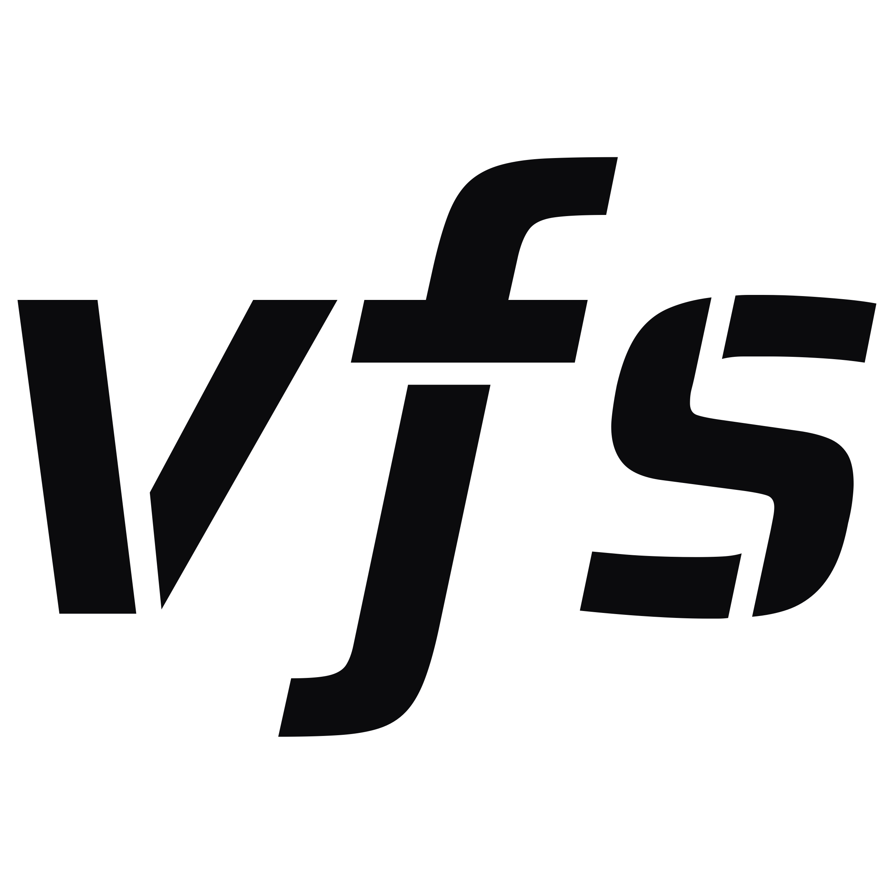

session proposal · october 2026One open-source system your engineers build on and your agents already know how to drive. Search, permissions, and persistence on the SQL database you already have.
Clay Gendron · developer of vfs
ETL pipelines, vector stores, graph databases, APIs, and tools, each with its own access control. Hard for developers to build in, hard for agents to operate in. The better way is an abstraction both already understand deeply: the file system.
Agent-native search spanning pattern matching, semantic meaning, and graph traversal.
Persists to the database you already have, exposed to agents as an MCP server.
A wrong write is a restore, not an incident. Scripts run in a hermetic runtime.
Personal, department, and organization spaces are just directories with grants.
How to build it for your personal or enterprise agents, on one complete system instead of another layer.
Why this design is the right one, from verb shape to reversible writes to permissioning.
Everything shown is open source. Mount it on your own database the same week.